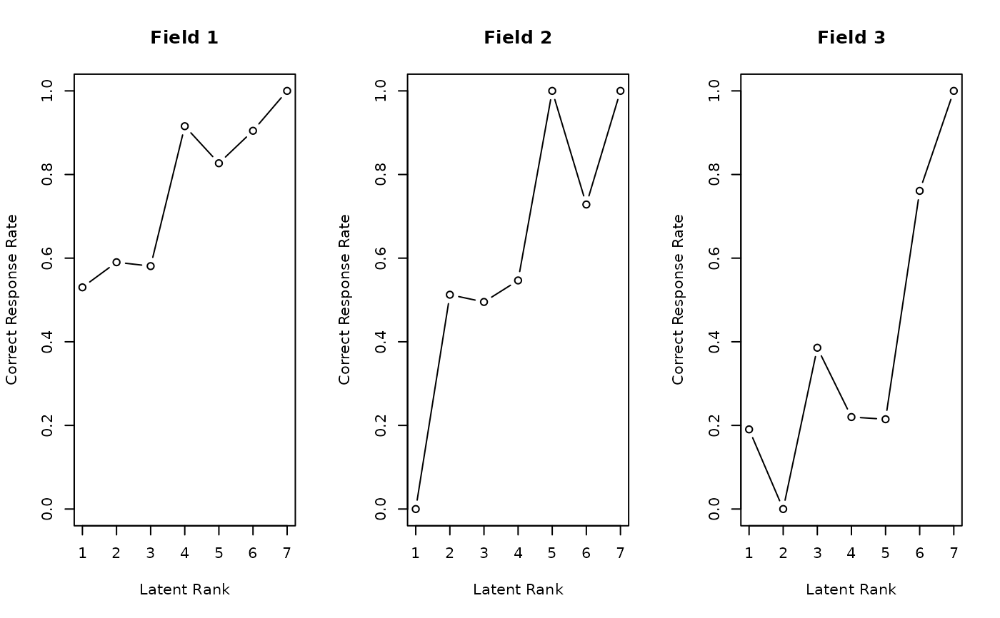
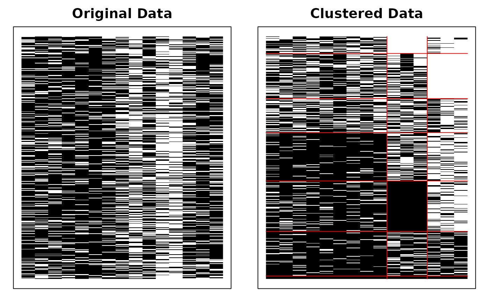
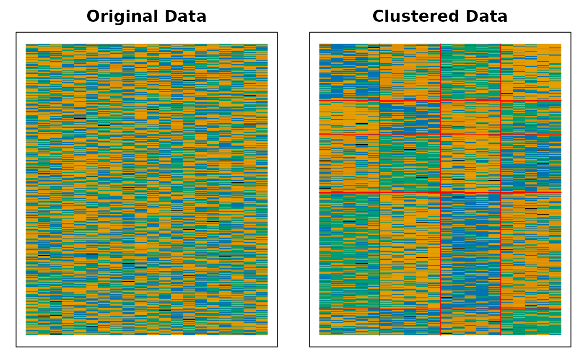
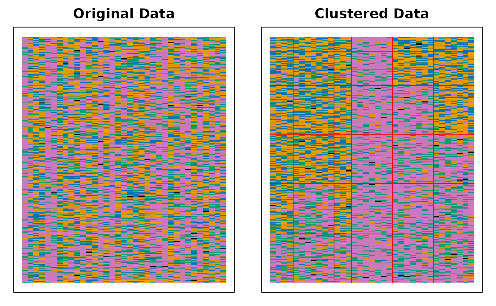
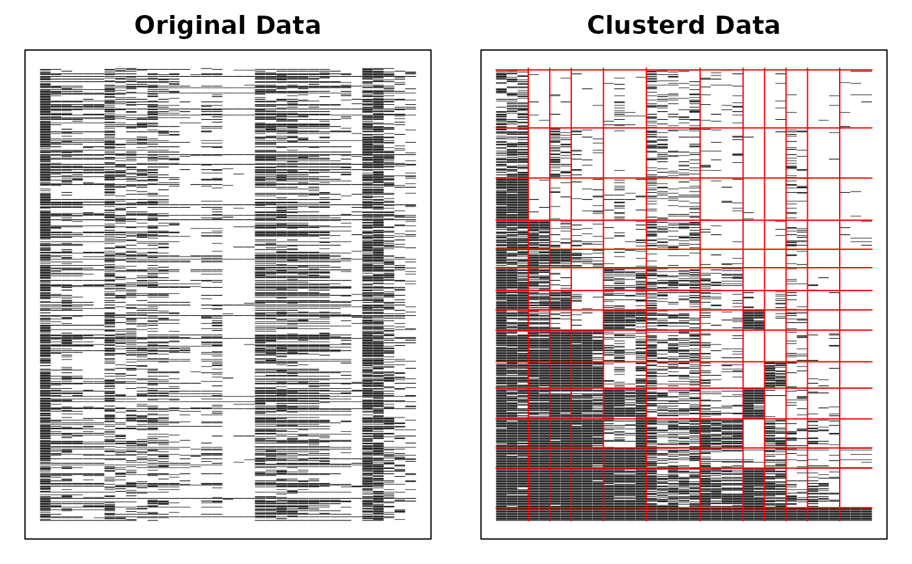
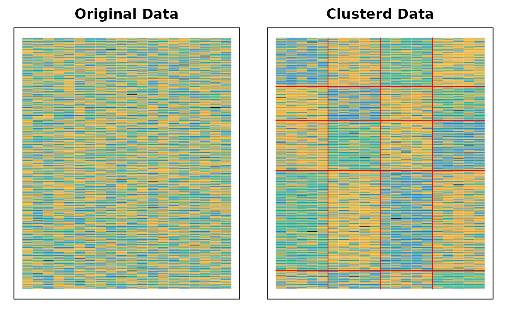

Biclustering with Infinite Relational Model
Source:R/07_IRM.R, R/17_Biclustering_nominal_IRM.R
Biclustering_IRM.RdThis function performs Biclustering structure learning using the Infinite Relational Model (IRM) to automatically determine the optimal number of classes C and optimal number of fields F. It dispatches to the appropriate method based on the data type: binary, ordinal, or nominal. For binary data, see Section 7.8 in Shojima(2022). For nominal data, a Dirichlet-Multinomial collapsed Gibbs sampler is used.
Usage
Biclustering_IRM(U, ...)
# Default S3 method
Biclustering_IRM(U, na = NULL, Z = NULL, w = NULL, ...)
# S3 method for class 'binary'
Biclustering_IRM(
U,
Z = NULL,
w = NULL,
na = NULL,
gamma_c = 1,
gamma_f = 1,
max_iter = 100,
stable_limit = 5,
minSize = 20,
EM_limit = 20,
seed = 123,
verbose = TRUE
)
# S3 method for class 'nominal'
Biclustering_IRM(
U,
gamma_c = 1,
gamma_f = 1,
alpha = 1,
max_iter = 100,
stable_limit = 5,
minSize = 20,
EM_limit = 20,
seed = 123,
verbose = TRUE,
...
)Arguments
- U
U is either a data class of exametrika, or raw data. When raw data is given, it is converted to the exametrika class with the dataFormat function.
- ...
Additional arguments passed to specific methods.
- na
na argument specifies the numbers or characters to be treated as missing values.
- Z
Z is a missing indicator matrix of the type matrix or data.frame
- w
w is item weight vector
- gamma_c
\(\gamma_C\) is the hyperparameter of the CRP and represents the attractiveness of a new Class. As \(\gamma_C\) increases, the student is more likely to be seated at a vacant class. The default is 1.
- gamma_f
\(\gamma_F\) is the hyperparameter of the CRP and represents the attractiveness of a new Field. The greater this value it more likely to be classified in the new field. The default is 1.
- max_iter
A maximum iteration number of IRM process. The default is 100.
- stable_limit
The IRM process exits the loop when the FRM stabilizes and no longer changes significantly. This option sets the maximum number of stable iterations, with a default of 5.
- minSize
A value used for readjusting the number of classes.If the size of each class is less than
minSize, the number of classes will be reduced. Note that this under limit of size is not used for either all correct or all incorrect class.- EM_limit
After IRM process, resizing the number of classes process will starts. This process using EM algorithm,
EM_limitis the maximum number of iteration with default of 20.- seed
Random seed for reproducibility. When a numeric value is provided,
set.seed(seed)is called before the Gibbs sampling begins, ensuring reproducible results. The default is123, which guarantees deterministic output. Set toNULLto disable seed setting and let the results depend on the current state of the random number generator.- verbose
verbose output Flag. default is TRUE
- alpha
Dirichlet distribution concentration parameter for the prior density of field reference probabilities (nominal IRM only). Must be positive. The default is 1.
Value
An object of class "exametrika" containing the IRM results.
See Biclustering_IRM.binary or Biclustering_IRM.nominal for details.
- nobs
Sample size. The number of rows in the dataset.
- msg
A character string indicating the model type.
- testlength
Length of the test. The number of items included in the test.
- n_class
Optimal number of classes (new naming convention).
- n_field
Optimal number of fields (new naming convention).
- em_cycle
Number of EM algorithm iterations (new naming convention).
- Nclass
Optimal number of classes (deprecated, use n_class).
- Nfield
Optimal number of fields (deprecated, use n_field).
- EM_Cycle
Number of EM algorithm iterations (deprecated, use em_cycle).
- BRM
Bicluster Reference Matrix
- FRP
Field Reference Profile
- FRPIndex
Index of FFP includes the item location parameters B and Beta, the slope parameters A and Alpha, and the monotonicity indices C and Gamma.
- TRP
Test Reference Profile
- FMP
Field Membership Profile
- Students
Rank Membership Profile matrix.The s-th row vector of \(\hat{M}_R\), \(\hat{m}_R\), is the rank membership profile of Student s, namely the posterior probability distribution representing the student's belonging to the respective latent classes. It also includes the rank with the maximum estimated membership probability, as well as the rank-up odds and rank-down odds.
- LRD
Latent Rank Distribution. see also plot.exametrika
- LFD
Latent Field Distribution. see also plot.exametrika
- RMD
Rank Membership Distribution.
- TestFitIndices
Overall fit index for the test.See also TestFit
For nominal data, the returned list includes:
- Q
Response matrix.
- Z
Missing indicator matrix.
- testlength
Number of items.
- nobs
Sample size.
- n_class
Optimal number of classes.
- n_field
Optimal number of fields.
- n_cycle
Number of EM algorithm iterations.
- FRP
Field Reference Profile, a 3D array (nfld x ncls x maxQ).
- LFD
Latent Field Distribution.
- LCD
Latent Class Distribution.
- FieldMembership
Field membership probability matrix.
- ClassMembership
Class membership probability matrix.
- FieldEstimated
Estimated field assignment for each item.
- ClassEstimated
Estimated class assignment for each student.
- Students
Rank Membership Profile matrix with estimated class.
- TestFitIndices
Overall fit index for the test.
- log_lik
Log-likelihood of the model.
Examples
# \donttest{
# Fit a Biclustering model with automatic structure learning using IRM
# gamma_c and gamma_f are concentration parameters for the Chinese Restaurant Process
result <- Biclustering_IRM(J35S515, gamma_c = 1, gamma_f = 1, verbose = TRUE)
#> iter 1: match=0 nfld=15 ncls=30
#> iter 2: match=0 nfld=12 ncls=27
#> iter 3: match=1 nfld=12 ncls=24
#> iter 4: match=2 nfld=12 ncls=23
#> iter 5: match=3 nfld=12 ncls=23
#> iter 6: match=0 nfld=12 ncls=23
#> iter 7: match=1 nfld=12 ncls=23
#> iter 8: match=2 nfld=12 ncls=23
#> iter 9: match=3 nfld=12 ncls=21
#> iter 10: match=4 nfld=12 ncls=21
#> iter 11: match=5 nfld=12 ncls=21
#> Adjusting classes: BIC=-99592.5 ncls=21 (min size < 20)
#> Adjusting classes: BIC=-99980.4 ncls=20 (min size < 20)
#> Adjusting classes: BIC=-99959.7 ncls=19 (min size < 20)
#> Adjusting classes: BIC=-99988.3 ncls=18 (min size < 20)
#> Adjusting classes: BIC=-100001.3 ncls=17 (min size < 20)
# Display the Bicluster Reference Matrix (BRM) as a heatmap
plot(result, type = "Array")
 # Plot Field Reference Profiles (FRP) in a 3-column grid
plot(result, type = "FRP", nc = 3)
# Plot Field Reference Profiles (FRP) in a 3-column grid
plot(result, type = "FRP", nc = 3)




# }
# \donttest{
result <- Biclustering_IRM(J35S515, gamma_c = 1, gamma_f = 1, verbose = TRUE)
#> iter 1: match=0 nfld=15 ncls=30
#> iter 2: match=0 nfld=12 ncls=27
#> iter 3: match=1 nfld=12 ncls=24
#> iter 4: match=2 nfld=12 ncls=23
#> iter 5: match=3 nfld=12 ncls=23
#> iter 6: match=0 nfld=12 ncls=23
#> iter 7: match=1 nfld=12 ncls=23
#> iter 8: match=2 nfld=12 ncls=23
#> iter 9: match=3 nfld=12 ncls=21
#> iter 10: match=4 nfld=12 ncls=21
#> iter 11: match=5 nfld=12 ncls=21
#> Adjusting classes: BIC=-99592.5 ncls=21 (min size < 20)
#> Adjusting classes: BIC=-99980.4 ncls=20 (min size < 20)
#> Adjusting classes: BIC=-99959.7 ncls=19 (min size < 20)
#> Adjusting classes: BIC=-99988.3 ncls=18 (min size < 20)
#> Adjusting classes: BIC=-100001.3 ncls=17 (min size < 20)
plot(result, type = "Array")

# }
# \donttest{
# Fit a nominal Biclustering IRM model
result <- Biclustering_IRM(J20S600, gamma_c = 1, gamma_f = 1, verbose = TRUE)
#> iter 1: match=0 nfld=6 ncls=6
#> iter 2: match=0 nfld=4 ncls=6
#> iter 3: match=1 nfld=4 ncls=7
#> iter 4: match=2 nfld=4 ncls=7
#> iter 5: match=3 nfld=4 ncls=5
#> iter 6: match=4 nfld=4 ncls=6
#> iter 7: match=5 nfld=4 ncls=6
#> Adjusting classes: BIC=28686.8 ncls=6 (min size < 20)
plot(result, type = "Array")

# }